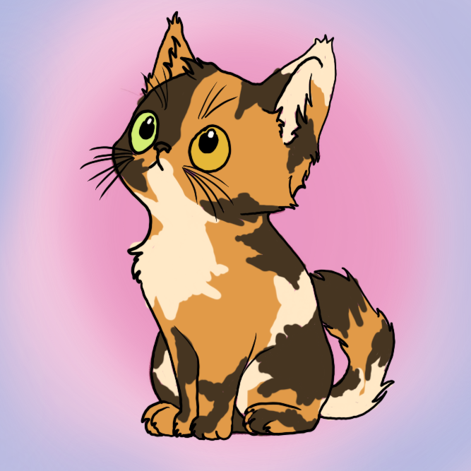

Geschiedenis van de poezenboot
In 1966 begon het verhaal van Stichting de Poezenboot in Amsterdam met mevrouw V. Weelde, die een moederpoes en haar kittens vond en besloot ze te verzorgen. Ze stond daardoor ook bekend als de "kattendame." Naarmate meer zwerfkatten haar huis opzochten, groeide het idee van een opvang. In 1968 werd de eerste woonboot gekocht en ingericht als kattenopvang. In 1971 volgde de aanschaf van een tweede boot. De opvang groeide uiteindelijk uit tot een attractie. In 1979 werd de Tjalk vervangen door een speciaal gebouwde Ark die nog steeds op dezelfde plek ligt. Stichting de Poezenboot werd officieel opgericht in 1987 en groeide uit tot een wereldbekende kattenopvang. In 2001 begon een grootschalige renovatie om aan moderne eisen te voldoen. De binnenruimte werd heringericht, en in 2002 was de opgeknapte boot klaar.
Adopteer mij!
Ik ben Helle, ik ben ongeveer 2,5 jaar en ik zoek een nieuw huis!
De digitale revolutie deed zijn intrede in 2003 met de lancering van de eerste website. Mevrouw V. Weelde overleed in 2005 op 90-jarige leeftijd, waarna Judith haar rol als betrokken beheerder overnam. Het digitale tijdperk werd omarmd, met sociale media zoals Twitter, Facebook en Instagram vanaf 2010 tot 2017. In 2006 kwam echter slecht nieuws, toen autoriteiten besloten de tweede Poezenboot weg te slepen, ondanks inspanningen om het belang ervan te benadrukken. Het verhaal van Stichting de Poezenboot illustreert een indrukwekkende evolutie van een eenvoudige zorg voor een moederpoes tot een wereldwijde bekendheid als kattenopvang op het water.